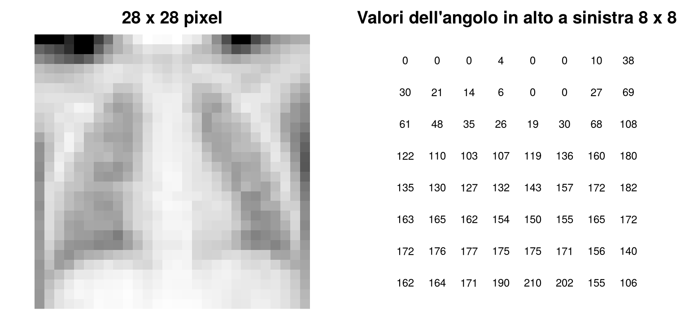
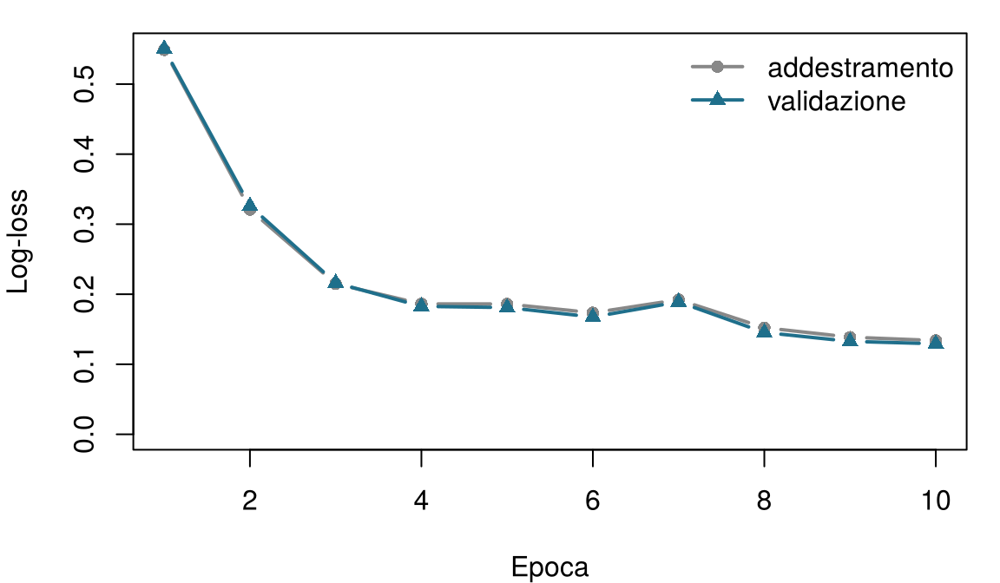

7 Reti neurali e apprendimento profondo
Un neurone artificiale si ispira, in modo molto libero, a una cellula nervosa. Abbina ogni parte di un neurone biologico all’elemento del neurone artificiale che svolge un ruolo simile. Prova a indovinare: il capitolo spiega ciascuno di questi elementi.
| Parte della cellula nervosa | Corrispondente nel neurone artificiale |
|---|---|
| I dendriti, che ricevono segnali da altre cellule | |
| La forza di ciascuna sinapsi | |
| Il corpo cellulare (soma), che somma i segnali eccitatori e inibitori | |
| Il segmento iniziale dell'assone, che scarica solo sopra una soglia | |
| I terminali dell'assone, che trasmettono il segnale |
Come usare questo capitolo
Questo capitolo riprende alcune idee dai capitoli precedenti:
- Un modello è una rappresentazione semplificata della realtà, \(y = f(\mathbf{x}) + \varepsilon\), e apprendere significa stimare \(f\) dai dati (Definizione 1.3). Ogni riga di un dataset è un’istanza con variabili \(\mathbf{x}_i\) e un esito \(y_i\) (Definizione 1.7).
- I modelli vengono stimati su un insieme di addestramento e giudicati su un insieme di test che non hanno mai visto (Sezione 1.8); un modello troppo flessibile va incontro a sovradattamento (Definizione 1.8). Le scelte fatte durante l’addestramento usano un insieme di validazione separato (Capitolo 3).
- Una funzione di perdita \(\mathcal{L}\) misura quanto sono sbagliate le previsioni di un modello (Capitolo 3).
- La regressione logistica trasforma una somma pesata in una probabilità con la funzione logistica (sigmoide) \(\sigma(z) = 1/(1+e^{-z})\). Gli errori di un classificatore si riassumono in una matrice di confusione, da cui derivano la sensibilità (la quota di malati che segnala) e la specificità (la quota di sani che esclude); una soglia \(t\) trasforma una probabilità in una decisione (Capitolo 5).
- Il tasso di apprendimento \(\eta\) controlla l’ampiezza del passo compiuto da un algoritmo di apprendimento (Capitolo 6, boosting).
| Esempio | Chi o che cosa | Esito | Volti che incontrerai |
|---|---|---|---|
| 1 Terapia intensiva del Reparto 7 | 1.250 pazienti di terapia intensiva in 4 ospedali | variazione della creatinina in 48 h (danno renale acuto se ≥ 0,3 mg/dL) | Aoife (71 anni, sepsi, rischio borderline), Tomás (54 anni, rischio basso), Priya (38 anni, rischio alto); la dott.ssa Emma Walsh; Seán, il farmacista |
| 2 Studio ONCO-1 | 1.000 pazienti randomizzati a ricevere o meno la chemioterapia | riduzione del tumore (%) | i pazienti #0042 e #0917 |
| 3 HomeBeat | 500 persone che indossano uno smartwatch a casa | punteggio di stress, evento di peggioramento | Lena |
| 4 CellWorks | 420 lotti di produzione di una terapia cellulare | punteggio di potenza | il lotto CW-118 |
Tutti e quattro i dataset sono simulati e si possono scaricare dall’appendice sui dati. La presentazione completa si trova in Sezione 1.1.
Questo capitolo usa anche immagini reali: radiografie del torace pediatriche della collezione pubblica PneumoniaMNIST, descritta nell’appendice sui dati.
Questo capitolo va da una singola cellula nervosa a una rete che legge le radiografie del torace. Comprende dodici sezioni e un Laboratorio, sette verifiche rapide, tre widget “Prova tu”, una sfida e tre missioni di programmazione in R e Python. Calcola circa due ore. Nel browser non gira nulla di pesante: la rete convoluzionale è stata addestrata una volta sola e i suoi risultati vengono caricati da file.
| Simbolo | Significato | Sezione |
|---|---|---|
| \(x_1, \dots, x_p\); \(\mathbf{x}\) | input di un neurone (le variabili) | Sezione 7.2 |
| \(w_1, \dots, w_p\); \(\mathbf{w}\) | pesi di un neurone | Sezione 7.2 |
| \(b\) | bias di un neurone | Sezione 7.2 |
| \(z = \mathbf{w}^{\top}\mathbf{x} + b\) | somma pesata (pre-attivazione) | Sezione 7.2 |
| \(g(\cdot)\) | funzione di attivazione | Sezione 7.2 |
| \(\sigma(z)\) | funzione logistica (sigmoide) | Sezione 7.2 |
| \(\mathcal{L}\) | funzione di perdita | Sezione 7.3 |
| \(\eta\) | tasso di apprendimento | Sezione 7.3 |
| \(\mathbf{W}^{(l)}\), \(\mathbf{b}^{(l)}\) | matrice dei pesi e vettore dei bias dello strato \(l\) | Sezione 7.4 |
| \(\mathbf{h}^{(l)}\) | rappresentazione nascosta (output) dello strato \(l\) | Sezione 7.4 |
L’elenco completo si trova nella pagina della notazione. I pesi delle reti neurali si scrivono \(w\) e \(\mathbf{W}\); i coefficienti dei modelli statistici mantengono la lettera \(\beta\).
7.1 Dal cervello ai neuroni artificiali
Le reti neurali artificiali sono nate come un tentativo di catturare, in una forma matematica molto semplificata, il modo in cui calcolano le cellule nervose. Questa idea viene talvolta chiamata neuromorfismo: rappresentare il calcolo con unità vagamente ispirate al cervello, in cui dei “neuroni” ricevono segnali, li combinano e trasmettono una risposta, mentre delle “sinapsi” stabiliscono quanto conta ciascun segnale. L’obiettivo non è mai stato copiare fedelmente la biologia (i sistemi biologici sono troppo complessi per questo), ma prenderne in prestito la capacità di riconoscere schemi, integrare evidenze e generalizzare (Mead 1990).
I neuroni furono descritti per la prima volta in dettaglio dall’istologo spagnolo Santiago Ramón y Cajal, i cui disegni mostrarono che il sistema nervoso è fatto di cellule separate, collegate in punti di contatto, e che è considerato uno dei fondatori delle neuroscienze moderne (Ramón y Cajal 1909). Esistono molti tipi di neurone, ma un neurone “canonico” ha le parti schematizzate nella Figura 7.1.

- I dendriti, l’albero di ingresso. Prolungamenti ramificati che ricevono segnali. Un neurone riceve di solito migliaia di input sinaptici sui dendriti e sul corpo cellulare. Arrivano come potenziali postsinaptici eccitatori, che alzano il voltaggio della membrana, e inibitori, che lo abbassano.
- Le sinapsi, le connessioni pesate. Ogni punto di contatto tra due neuroni è una sinapsi. Le sinapsi hanno forze diverse, e la loro forza cambia con l’uso. Questa plasticità è la base biologica dell’apprendimento e della memoria.
- Il soma, l’integratore. Il corpo cellulare somma i potenziali eccitatori e inibitori in arrivo: in pratica una somma pesata biofisica, modellata dalle proprietà elettriche della membrana e dalla forma dei dendriti.
- Il segmento iniziale dell’assone, il punto di decisione. Alla base dell’assone, canali del sodio voltaggio-dipendenti fittamente raggruppati decidono se il neurone scarica. Se il potenziale di membrana complessivo supera una soglia (tipicamente intorno a −55 mV), inizia una rapida depolarizzazione: il potenziale d’azione, o spike.
- L’assone e i suoi terminali, il cavo di uscita. Lo spike percorre l’assone, spesso isolato dalla mielina, che accelera la conduzione. Nei terminali libera neurotrasmettitori che influenzano le cellule successive.
In breve, una cellula nervosa riceve molti segnali, li pesa e li somma, scarica se la somma supera una soglia e trasmette il risultato (Kandel et al. 2021). Tieni a mente questi quattro verbi: il neurone artificiale conserva esattamente questi e lascia cadere quasi tutto il resto.
7.2 Il neurone artificiale
Nel 1943 Warren McCulloch e Walter Pitts proposero un neurone matematico che somma input binari e scarica quando la somma supera una soglia (McCulloch e Pitts 1943). Nel 1958 Frank Rosenblatt aggiunse ciò che mancava: pesi appresi dagli esempi. Chiamò la sua macchina percettrone (perceptron) (Rosenblatt 1958).
Definizione 7.1 (Neurone artificiale (percettrone)) Un neurone artificiale riceve input numerici \(x_1, \dots, x_p\), moltiplica ciascuno per un peso \(w_j\), aggiunge un bias \(b\) e fa passare la somma pesata \[ z = w_1 x_1 + w_2 x_2 + \cdots + w_p x_p + b = \mathbf{w}^{\top}\mathbf{x} + b \qquad(7.1)\] attraverso una funzione di attivazione \(g\), ottenendo il suo output \(\hat y = g(z)\). I pesi e il bias sono i parametri del neurone: vengono appresi dai dati. Il percettrone originale di Rosenblatt usava un’attivazione a gradino.
I pesi dicono quanto conta ciascun input, e in quale direzione: un peso positivo grande spinge l’output verso l’alto, uno negativo lo spinge verso il basso, un peso vicino a zero significa che l’input viene ignorato. Il bias sposta il punto in cui il neurone “scarica”, qualunque siano gli input; ha un ruolo vagamente simile alla soglia di scarica di una cellula nervosa.
Definizione 7.2 (Funzione di attivazione) Una funzione di attivazione \(g\) trasforma la somma pesata \(z\) nell’output del neurone. Le scelte più comuni sono la funzione a gradino, \(g(z) = 1\) se \(z \ge 0\) e \(0\) altrimenti (il percettrone di Rosenblatt); la funzione logistica (sigmoide), \(g(z) = \sigma(z) = 1/(1+e^{-z})\), che restituisce un numero tra 0 e 1; e l’unità lineare rettificata (ReLU), \(g(z) = \max(0, z)\), che lascia passare invariati i valori positivi, azzera quelli negativi ed è la scelta predefinita all’interno delle reti moderne (Nair e Hinton 2010).
La Figura 7.2 rappresenta un neurone con tre input.
La Figura 7.3 sovrappone l’immagine biologica a quella artificiale: gli input arrivano attraverso i “dendriti”, la somma pesata è il “soma”, l’attivazione svolge il ruolo dell’assone che decide se scaricare, e l’output esce attraverso il “terminale dell’assone”.

L’analogia aiuta a ricordare le parti, ma è libera. I neuroni veri comunicano con spike il cui momento trasporta informazione; i loro dendriti fanno calcoli locali, non semplici somme; i neuromodulatori come la dopamina cambiano la risposta di interi circuiti; e le sinapsi cambiano secondo regole biologiche che non assomigliano affatto all’algoritmo che addestra le reti artificiali. Un neurone artificiale è una somma pesata seguita da una funzione semplice. La sua potenza deriva dal collegarne molti e dall’apprendere i pesi, non dall’assomigliare a un cervello.
Un collega dice: “Le reti neurali funzionano così bene perché copiano il funzionamento del cervello.” Qual è la risposta migliore?
7.2.1 Un neurone con sigmoide è una regressione logistica
Scegli la sigmoide come attivazione e guarda di nuovo la Equazione 7.1: \[ \hat y = \sigma(w_1 x_1 + \cdots + w_p x_p + b) = \frac{1}{1 + e^{-(\mathbf{w}^{\top}\mathbf{x} + b)}} . \] È esattamente il modello di regressione logistica del Capitolo 5, \(P(y = 1 \mid \mathbf{x}) = \sigma(\beta_0 + \beta_1 x_1 + \cdots + \beta_p x_p)\), in cui i pesi svolgono il ruolo dei coefficienti (\(w_j = \beta_j\)) e il bias quello dell’intercetta (\(b = \beta_0\)). La somma pesata \(z\) è il log-odds (il logaritmo dell’odds), e l’output è una probabilità. Un singolo neurone sigmoide è una regressione logistica: tutto ciò che hai imparato sulla lettura degli odds ratio, sulla scelta delle soglie e sul controllo della calibrazione vale anche per lui.
Prendi Aoife Byrne, 71 anni, ricoverata nel Reparto 7 per sepsi, il cui rischio di danno renale acuto (AKI) l’équipe ha valutato nel Capitolo 1. La regressione logistica principale del Capitolo 5 prevede l’AKI (un aumento della creatinina di almeno 0,3 mg/dL in 48 ore (Kidney Disease: Improving Global Outcomes (KDIGO) Acute Kidney Injury Work Group 2012)) a partire da cinque variabili all’ammissione ed è stata stimata sui 1.000 pazienti di addestramento della suddivisione condivisa. La sua intercetta è −1,1705 e i suoi coefficienti sono 0,4031 per punto SOFA (Vincent et al. 1996), 0,2968 per mmol/L di lattato, −0,0358 per mmHg di pressione arteriosa media minima, 2,3413 per mg/dL di creatinina di base e −2,6425 per unità di aderenza al protocollo (una proporzione da 0 a 1). Letti come un neurone, sono cinque pesi \(w_1, \dots, w_5\) e un bias \(b\). Aoife ha SOFA 6, lattato 2,1 mmol/L, PAM minima 66 mmHg, creatinina di base 1,0 mg/dL e aderenza al protocollo 0,72. Calcola tu l’output del suo neurone.
Il neurone di Aoife. La somma pesata z è già calcolata. Riempi lo spazio vuoto con l’attivazione sigmoide, in modo che p sia la probabilità stimata di AKI per Aoife.
La sigmoide di z è 1 / (1 + exp(-z)).
p <- 1 / (1 + exp(-z))La sigmoide di z è 1 / (1 + np.exp(-z)).
p = 1 / (1 + np.exp(-z))L’output del neurone, 0,486, è il rischio di Aoife del Capitolo 5 (0,49), perché il neurone è quel modello: stessi input, stessi pesi, stessa sigmoide.
Dal punto di vista geometrico, un neurone traccia un confine rettilineo. I punti in cui \(z = 0\) (dove l’output della sigmoide vale esattamente 0,5) soddisfano \(\mathbf{w}^{\top}\mathbf{x} + b = 0\), che è una retta in due dimensioni, un piano in tre e un iperpiano in più dimensioni. Ogni paziente da una parte riceve una probabilità superiore a 0,5, ogni paziente dall’altra parte una probabilità inferiore. Prova tu.
Il laboratorio del percettrone. Ogni punto è uno dei 1.250 pazienti del Reparto 7, colorato in base al verificarsi dell’AKI. Per stare sullo schermo, questo neurone ha solo due input, SOFA e lattato (un modello didattico, non il modello a cinque variabili qui sopra). Le due variabili sono standardizzate (0 = il paziente medio, 1 = una deviazione standard sopra la media). Sposta i pesi e il bias: l’ombreggiatura è l’output del neurone, la linea nera è il suo confine \(z = 0\). La log-loss misura quanto sono sbagliate le probabilità (più bassa è, meglio è; rispondere 0,5 per tutti dà 0,693). Obiettivo: sui dati del Reparto 7, con la sigmoide, portare la log-loss sotto 0,57. Poi passa al secondo dataset, in cui il rischio dipende da una combinazione delle due variabili, e prova a trovare una qualsiasi retta che funzioni.
Croci arancioni: AKI (o evento) verificato; cerchi grigi: non verificato.
Nel Reparto 7 un confine rettilineo fa un lavoro ragionevole: un SOFA più alto e un lattato più alto spingono entrambi il rischio verso l’alto, e la retta migliore li bilancia. Nel secondo dataset nessuna retta fa meglio che tirare a indovinare: con la sigmoide la log-loss non scende mai sotto circa 0,69, il valore che si ottiene rispondendo 0,5 per tutti, qualunque pesi tu scelga. (Una retta può isolare un angolo e classificare correttamente circa due terzi dei pazienti, ma lo schema vero ne classificherebbe correttamente 0,89.) Lo schema lì è un’interazione: il rischio è alto quando entrambe le variabili sono alte o entrambe sono basse. Nel 1969 Marvin Minsky e Seymour Papert dimostrarono formalmente che un singolo percettrone non può rappresentare schemi di questo tipo, il più semplice dei quali è l’“or esclusivo” (XOR) (Minsky e Papert 1969); la loro analisi contribuì a una lunga pausa nella ricerca sulle reti neurali. La via d’uscita, strati di neuroni, è l’argomento della Sezione 7.4. Prima, però, dobbiamo vedere come un neurone trova da solo i suoi pesi.
Un neurone ha un’attivazione sigmoide e due input, età e lattato. Dopo l’addestramento, \(w_{\text{lattato}} = 0{,}47\). Che cosa significa questo peso?
7.3 Come apprende una rete: perdita e discesa del gradiente
Ogni metodo di questo libro esegue lo stesso ciclo di apprendimento: ipotizzare con le impostazioni attuali, valutare l’ipotesi misurando quanto è sbagliata, correggere le impostazioni per renderla meno sbagliata e ripetere (Definizione 1.6). L’hai eseguito a mano con i cursori qui sopra. Un computer lo esegue con due ingredienti: una funzione di perdita per la valutazione e la discesa del gradiente per la correzione.
Valutare. Per un esito sì/no la perdita più usata è la log-loss, detta anche entropia incrociata binaria: \[ \mathcal{L}(\mathbf{w}, b) = -\frac{1}{n} \sum_{i=1}^{n} \Big[ y_i \log \hat p_i + (1 - y_i) \log (1 - \hat p_i) \Big], \qquad(7.2)\] dove \(\hat p_i\) è l’output del neurone per il paziente \(i\). Una previsione corretta e sicura non costa quasi nulla; una sbagliata e sicura (\(\hat p_i\) vicino a 0 per un paziente che ha davvero sviluppato un AKI) costa moltissimo. Minimizzare la Equazione 7.2 equivale a massimizzare la verosimiglianza del Capitolo 5. Per un esito numerico la perdita più usata è l’errore quadratico medio.
Correggere. La perdita dipende dai pesi. Immaginala come un paesaggio: ogni posizione è una scelta di pesi e l’altitudine è la perdita. Cerchiamo la valle più bassa. In un punto qualsiasi del pendio, il gradiente (il vettore delle derivate parziali \(\partial \mathcal{L} / \partial w_j\)) punta in salita, nella direzione di massimo aumento. Quindi facciamo un piccolo passo nella direzione opposta.
Definizione 7.3 (Discesa del gradiente) La discesa del gradiente minimizza una perdita ripetendo l’aggiornamento \[ w_j \leftarrow w_j - \eta \, \frac{\partial \mathcal{L}}{\partial w_j} \quad \text{per ogni peso } w_j \text{ (e allo stesso modo per il bias)}, \qquad(7.3)\] dove il tasso di apprendimento \(\eta > 0\) fissa l’ampiezza di ciascun passo. Un tasso di apprendimento troppo piccolo rende i progressi lentissimi; uno troppo grande scavalca la valle e può rimbalzare avanti e indietro o divergere (Goodfellow, Bengio, e Courville 2016).
Per un singolo neurone sigmoide con la log-loss, il gradiente ha una forma sorprendentemente semplice: \[ \frac{\partial \mathcal{L}}{\partial w_j} = \frac{1}{n} \sum_{i=1}^{n} (\hat p_i - y_i)\, x_{ij}, \qquad \frac{\partial \mathcal{L}}{\partial b} = \frac{1}{n} \sum_{i=1}^{n} (\hat p_i - y_i). \] Ogni paziente contribuisce con il proprio errore \((\hat p_i - y_i)\) moltiplicato per il proprio input. Se il neurone sottostima il rischio dei pazienti con lattato alto, il gradiente del peso del lattato è negativo e l’aggiornamento aumenta quel peso. È l’analogo computazionale della plasticità sinaptica: le connessioni che avrebbero aiutato si rafforzano.
La discesa del gradiente passo dopo passo. Per mantenere il grafico a una dimensione, il modello qui ha un solo peso: \(\hat p = \sigma(b + w \times \text{SOFA})\), con il SOFA standardizzato e il bias \(b\) fissato al suo valore migliore. La curva è la log-loss per ogni possibile \(w\); i punti sono i passi compiuti a partire da \(w = -1\). Aumenta il numero di passi, poi cambia il tasso di apprendimento. Obiettivo: raggiungere il fondo (entro 0,01 dal \(w\) migliore) in al massimo 10 passi. Poi prova un tasso di apprendimento superiore a 15.
Il tasso di apprendimento più piccolo non è la scelta più sicura: con η = 0,1 dopo 30 passi non sei ancora a metà strada verso il fondo. Un tasso moderato scende con regolarità; un tasso ben adattato alla curvatura della valle ci arriva in pochi passi; un tasso troppo grande salta da un lato all’altro della valle. Lo stesso tasso di apprendimento \(\eta\) è comparso nel boosting (Capitolo 6), con lo stesso significato: quanto fidarsi di ciascuna correzione.
Durante l’addestramento la perdita scende, poi sale, poi scende di nuovo, oscillando sempre di più da un’epoca all’altra. Qual è la causa più probabile?
Le reti reali vengono addestrate con qualche perfezionamento della stessa idea:
- Mini-batch ed epoche. Calcolare il gradiente su tutti i pazienti a ogni passo è lento. La discesa del gradiente stocastica usa a ogni passo un batch casuale di qualche decina di istanze (Robbins e Monro 1951). Un passaggio completo sull’intero insieme di addestramento è un’epoca; di solito l’addestramento richiede molte epoche.
- Ottimizzatori adattivi. Adam regola separatamente l’ampiezza del passo di ciascun peso, usando medie mobili dei gradienti passati; è la scelta predefinita nella maggior parte dei lavori di apprendimento profondo (Kingma e Ba 2015).
Definizione 7.4 (Batch ed epoca) Un batch (mini-batch) è il sottoinsieme di istanze di addestramento usato per un passo di discesa del gradiente. Un’epoca è un passaggio completo sull’insieme di addestramento; con 4.708 immagini di addestramento e batch da 64, un’epoca corrisponde a 74 passi.
La discesa del gradiente a mano. Il codice qui sotto stima una regressione logistica dell’AKI sul SOFA standardizzato con la discesa del gradiente, partendo da \(w = b = 0\) e compiendo 300 passi con tasso di apprendimento \(\eta = 1\). La funzione update esegue la Equazione 7.3 per un parametro: completala. L’ultima riga confronta la tua risposta con la stima di massima verosimiglianza.
Scrivi una funzione del valore attuale e del suo gradiente: function(theta, grad) theta - eta * grad.
update <- function(theta, grad) theta - eta * gradUsa una piccola funzione anonima: lambda theta, grad: theta - eta * grad.
update = lambda theta, grad: theta - eta * grad7.4 Da un neurone a una rete
Perché un unico confine rettilineo non dovrebbe bastare? Pensa a un chirurgo vascolare che stima il rischio di rottura di un aneurisma dell’aorta addominale. Età, fumo, ipertensione, coronaropatia e dimensioni dell’aneurisma contano tutti (Wanhainen et al. 2024), ma non semplicemente sommandosi: un grande aneurisma in un fumatore fragile con coronaropatia è molto più pericoloso di quanto suggerisca la somma delle parti. Un clinico ragiona attraverso concetti intermedi (“quanta riserva fisiologica ha questo paziente?”, “quanto è pesante il carico aterosclerotico?”) e poi li combina. Un singolo neurone non può farlo. Uno strato di neuroni sì: ogni neurone nascosto calcola una propria combinazione pesata degli input, che può svolgere il ruolo di una di queste variabili intermedie, e lo strato successivo le combina. La differenza rispetto al clinico è che alla rete non viene detto quali variabili intermedie costruire; impara qualsiasi combinazione riduca la perdita, e queste combinazioni non devono necessariamente corrispondere a un concetto clinico con un nome.
Definizione 7.5 (Percettrone multistrato (rete feed-forward)) Un percettrone multistrato (MLP) dispone i neuroni in strati. Lo strato di input contiene le variabili (non esegue alcun calcolo). Ogni strato nascosto \(l\) prende gli output dello strato precedente, calcola somme pesate e applica un’attivazione: \[ \mathbf{h}^{(1)} = g\big(\mathbf{W}^{(1)} \mathbf{x} + \mathbf{b}^{(1)}\big), \qquad \mathbf{h}^{(2)} = g\big(\mathbf{W}^{(2)} \mathbf{h}^{(1)} + \mathbf{b}^{(2)}\big), \quad \dots \qquad(7.4)\] dove la riga \(k\) della matrice dei pesi \(\mathbf{W}^{(l)}\) contiene i pesi del neurone \(k\) dello strato \(l\) e \(\mathbf{b}^{(l)}\) i suoi bias. Lo strato di output trasforma l’ultima rappresentazione nascosta nella previsione, per esempio un neurone sigmoide per una probabilità. Quando ogni neurone di uno strato è collegato a ogni neurone del successivo, gli strati sono completamente connessi (densi). Una rete con molti strati nascosti si dice profonda.
7.4.1 Perché l’attivazione deve essere non lineare
Supponiamo di omettere l’attivazione, in modo che ogni strato calcoli solo una somma pesata. Due strati darebbero \[ \mathbf{W}^{(2)}\big(\mathbf{W}^{(1)}\mathbf{x} + \mathbf{b}^{(1)}\big) + \mathbf{b}^{(2)} = \underbrace{\mathbf{W}^{(2)}\mathbf{W}^{(1)}}_{\text{una matrice}}\,\mathbf{x} + \underbrace{\mathbf{W}^{(2)}\mathbf{b}^{(1)} + \mathbf{b}^{(2)}}_{\text{un vettore}} , \] che è di nuovo una singola somma pesata. Per quanti strati impiliamo, una rete senza attivazioni non lineari collassa in un unico strato lineare: può tracciare solo confini rettilinei, esattamente come un neurone. Le pieghe introdotte dalla ReLU o dalla sigmoide in ogni neurone nascosto sono ciò che permette alla rete di rappresentare confini curvi e interazioni come quella del laboratorio del percettrone.
Un gruppo di lavoro costruisce una rete a dieci strati ma, per errore, non usa alcuna funzione di attivazione negli strati nascosti (lo strato di output ha una sigmoide). Che cosa può rappresentare questa rete?
Quanto può essere flessibile una rete con attivazioni non lineari? Risponde il teorema di approssimazione universale: una rete con un unico strato nascosto, che usi un’attivazione non lineare come la sigmoide, può approssimare qualsiasi funzione continua su una regione limitata con la precisione che vogliamo, purché abbia abbastanza neuroni nascosti (Cybenko 1989; Hornik, Stinchcombe, e White 1989). Il teorema viene spesso citato con troppa generosità. Garantisce che una buona approssimazione esiste; non dice quanti neuroni servano (forse un numero enorme), né che la discesa del gradiente la troverà, né che una rete stimata su un campione finito generalizzerà a nuovi pazienti. In pratica, per immagini e segnali, le reti più profonde con meno neuroni per strato tendono a essere più facili da addestrare, perché ogni strato può costruire sulle caratteristiche dello strato precedente (LeCun, Bengio, e Hinton 2015; Goodfellow, Bengio, e Courville 2016).
7.4.2 Retropropagazione
Con migliaia di pesi distribuiti su più strati, come otteniamo il gradiente della perdita rispetto a ciascuno di essi? La risposta è la retropropagazione (backpropagation) (Rumelhart, Hinton, e Williams 1986).
Definizione 7.6 (Retropropagazione) La retropropagazione calcola il gradiente della perdita rispetto a ogni peso di una rete applicando la regola della catena del calcolo differenziale strato per strato, dall’output all’indietro verso l’input. Un passaggio in avanti calcola le previsioni e la perdita; un passaggio all’indietro rimanda indietro l’errore, e ogni strato comunica al precedente quanto i suoi output hanno contribuito alla perdita. I gradienti vengono poi usati nella Equazione 7.3.
L’intuizione: un peso del primo strato influisce sulla perdita solo attraverso i neuroni nascosti che alimenta, i quali a loro volta influiscono su di essa attraverso l’output. La regola della catena moltiplica questi effetti lungo ogni percorso. Le librerie di apprendimento profondo come PyTorch (Paszke et al. 2019) e TensorFlow lo fanno automaticamente: tu scrivi il passaggio in avanti e loro calcolano i gradienti.
7.4.3 Più di due classi: softmax
Per un esito sì/no basta un neurone di output sigmoide. Per \(C\) classi mutuamente esclusive (per esempio normale, polmonite batterica e polmonite virale), lo strato di output ha \(C\) neuroni con somme pesate \(z_1, \dots, z_C\), e la funzione softmax (Goodfellow, Bengio, e Courville 2016) le trasforma in probabilità che sommano a 1: \[ P(\text{classe } c \mid \mathbf{x}) = \frac{e^{z_c}}{\sum_{c'=1}^{C} e^{z_{c'}}} . \qquad(7.5)\] Con \(C = 2\) la softmax si riduce alla funzione logistica. La softmax ritorna nella Parte V, dove un modello linguistico la usa per assegnare una probabilità a ogni possibile parola successiva.
7.5 Le immagini sono numeri: i tensori
Le reti neurali danno il meglio su dati con una struttura che una tabella nasconde: immagini, segnali e testo. Prima di dare loro una radiografia, ci serve un termine di vocabolario.
Definizione 7.7 (Tensore) Un tensore è un array di numeri con un numero qualsiasi di dimensioni (assi). Un singolo numero è un tensore di rango 0, un vettore di rango 1, una matrice di rango 2; aggiungendo assi si ottengono rango 3, rango 4 e così via. La forma (shape) di un tensore elenca la lunghezza di ciascun asse.
Un tensore non è un oggetto esotico: è il familiare vettore o la familiare matrice estesi a più assi. In R:
v <- c(1, 2, 3) # rango 1: un vettore
M <- matrix(1:6, nrow = 2) # rango 2: una matrice
A <- array(1:24, dim = c(2, 3, 4)) # rango 3: una pila di quattro matrici 2 x 3
c(length(v)); dim(M); dim(A)[1] 3[1] 2 3[1] 2 3 4Un’immagine in scala di grigi è una matrice: altezza × larghezza, un numero per pixel, piccolo per lo scuro e grande per il chiaro. Una radiografia del torace di 512 × 512 pixel è un tensore di rango 2 con forma (512, 512). Le immagini a colori (dermatoscopia, fotografie della retina, istologia colorata) aggiungono un asse dei canali (rosso, verde, blu), con forma (altezza, larghezza, 3). Le reti vengono addestrate su batch di immagini, il che aggiunge un ulteriore asse: un batch di 64 radiografie in scala di grigi è un tensore di rango 4 con forma (64, 1, 28, 28) nella convenzione di PyTorch (batch, canali, altezza, larghezza). Una TC o una risonanza magnetica è una pila di sezioni, (profondità, altezza, larghezza), e la risonanza multisequenza (T1, T2, FLAIR…) aggiunge canali; le sequenze cine dell’ecografia aggiungono il tempo. Qualunque sia la modalità, una rete vede un tensore di numeri con un’etichetta associata. Non vede polmoni né tumori.
Questo capitolo usa PneumoniaMNIST (Yang et al. 2023), una versione standardizzata di una collezione pubblica di radiografie del torace pediatriche di Guangzhou, etichettate da medici esperti (Kermany et al. 2018) e distribuite anche su Kaggle (Mooney 2018). MedMNIST riduce ogni immagine a 28 × 28 pixel, così che una rete possa essere addestrata su un portatile in un minuto. È troppo piccola? La Figura 7.5 confronta radiografie della stessa collezione alla risoluzione originale e ridimensionate: la riduzione attenua le trame fini ma conserva gli schemi di densità su larga scala.

Nelle immagini normali i campi polmonari sono scuri e piuttosto uniformi, perché gli alveoli pieni d’aria assorbono poca radiazione; i vasi appaiono come sottili linee ramificate, e i margini del cuore e del diaframma sono netti. Nelle immagini con polmonite ci sono aree più bianche e dense (alveoli riempiti di materiale infiammatorio) che offuscano la trama vascolare e i margini cardiaci e rompono la simmetria tra i due polmoni. Questi schemi su larga scala sopravvivono al ridimensionamento; una versione 28 × 28 ne conserva meno, ma comunque abbastanza perché una rete faccia molto meglio del caso. Tieni d’occhio la lettera “R”: ci torneremo nella Sezione 7.9.

7.6 Reti neurali convoluzionali
Potremmo dare i 784 pixel di un’immagine 28 × 28 direttamente in pasto a un percettrone multistrato? Possiamo, e lo faremo (Sezione 7.7). Ma è uno spreco. Un primo strato completamente connesso assegna a ogni neurone nascosto un peso proprio per ogni pixel, così uno schema appreso nell’angolo in alto a sinistra deve essere appreso di nuovo in quello in basso a destra; e per un’immagine 512 × 512 un solo neurone nascosto avrebbe bisogno di 262.144 pesi. Le immagini hanno due proprietà che un’architettura migliore può sfruttare: gli schemi utili sono locali (un bordo, una chiazza di opacità), e lo stesso schema può comparire ovunque.
Negli anni Cinquanta e Sessanta David Hubel e Torsten Wiesel scoprirono che i neuroni della corteccia visiva rispondono a caratteristiche semplici, come bordi con un certo orientamento, all’interno di piccole regioni del campo visivo (Hubel e Wiesel 1962). Le reti convoluzionali incorporano la stessa idea nella loro architettura (LeCun et al. 1998).
Definizione 7.8 (Convoluzione, filtro, mappa delle caratteristiche) Una convoluzione fa scorrere sull’immagine una piccola griglia di pesi: un filtro o kernel, tipicamente 3 × 3. In ogni posizione moltiplica i pesi del filtro per i valori dei pixel sottostanti e somma i prodotti (più un bias). Il risultato, un numero per posizione, è una mappa delle caratteristiche (feature map): è grande dove l’immagine assomiglia localmente al filtro. Lo stesso filtro viene usato in ogni posizione (condivisione dei pesi), e i suoi pesi vengono appresi con la retropropagazione come tutti gli altri.
Definizione 7.9 (Pooling) Il pooling riduce una mappa delle caratteristiche riassumendone piccoli blocchi. Il max pooling con una finestra 2 × 2 conserva il valore più grande di ogni blocco, dimezzando altezza e larghezza; l’average pooling conserva la media. Il pooling rende la rappresentazione più piccola e meno sensibile alla posizione esatta di una caratteristica.
Definizione 7.10 (Rete neurale convoluzionale (CNN)) Una rete neurale convoluzionale (CNN) impila blocchi di convoluzione → attivazione (di solito ReLU) → pooling. I primi blocchi riconoscono schemi locali semplici come i bordi; i blocchi successivi li combinano in schemi più grandi e astratti. Le mappe delle caratteristiche finali vengono appiattite in un vettore e passate a strati completamente connessi che producono la previsione (LeCun et al. 1998; Goodfellow, Bengio, e Courville 2016).
Convoluzione su una radiografia del torace. Scegli un’immagine e un filtro 3 × 3. I pannelli mostrano l’input, la mappa delle caratteristiche prodotta dalla convoluzione, la stessa mappa dopo la ReLU (valori negativi azzerati) e il risultato di un max pooling 2 × 2: il primo blocco di una CNN, fatto a mano. Gli ultimi otto filtri sono stati appresi dalla rete addestrata nella Sezione 7.7. Traguardo: guarda a che cosa risponde almeno uno dei filtri appresi.
I filtri fatti a mano fanno quello che dice il loro nome: il filtro dei bordi verticali si accende sui margini sinistro e destro del torace e del cuore, la sfocatura elimina i dettagli fini. I filtri appresi sono meno ordinati (alla rete non è mai stato detto di cercare i bordi), ma molti di essi rispondono ai confini tra il polmone scuro e i tessuti più chiari. Nota anche che un filtro 3 × 3 ha solo nove pesi e un bias, per quanto grande sia l’immagine: la condivisione dei pesi è il motivo per cui le CNN richiedono molti meno parametri delle reti completamente connesse per la stessa immagine.
Perché, a parità di dati di addestramento, le reti convoluzionali di solito battono le reti completamente connesse sulle immagini?
La Figura 7.7 mostra la piccola CNN che addestriamo su PneumoniaMNIST.
7.7 Una piccola CNN per la polmonite pediatrica
Ora addestriamo tre modelli sulle 4 708 immagini di addestramento di PneumoniaMNIST (Yang et al. 2023; Kermany et al. 2018), usiamo le 524 immagini di validazione per monitorare l’addestramento e li giudichiamo una sola volta sulle 624 immagini di test, di cui il 62 % mostra una polmonite:
- Un neurone: regressione logistica sui 784 pixel grezzi (785 parametri).
- Un percettrone multistrato: 784 pixel → 64 neuroni ReLU → un neurone sigmoide, senza convoluzioni (50 305 parametri).
- La piccola CNN della Figura 7.7 (26 401 parametri).
Le reti sono state addestrate con l’ottimizzatore Adam (Kingma e Ba 2015) (tasso di apprendimento 0,001), batch da 64 e la log-loss della Equazione 7.2, per al massimo 10 epoche, su un normale processore da portatile, in circa un minuto ciascuna. Lo script è ch07_pneumonia_cnn.py; fissa il seme casuale in modo che i numeri seguenti siano riproducibili.
7.7.1 Osservare l’addestramento: sovradattamento, arresto anticipato, dropout

La Figura 7.8 mostra il ciclo di apprendimento all’opera. Entrambe le perdite scendono rapidamente nelle prime tre epoche e poi più lentamente; la piccola risalita all’epoca 7 è il rumore della discesa del gradiente stocastica. Le due curve restano vicine, quindi dopo 10 epoche questa piccola rete non mostra segni di sovradattamento. Se l’avessimo addestrata molto più a lungo, la perdita di addestramento avrebbe continuato a scendere mentre la perdita di validazione si sarebbe stabilizzata per poi iniziare a salire: la rete avrebbe cominciato a memorizzare le immagini di addestramento (Definizione 1.8). Due difese standard:
Definizione 7.11 (Arresto anticipato e dropout) L’arresto anticipato (early stopping) monitora la perdita su un insieme di validazione durante l’addestramento e conserva i pesi dell’epoca con la perdita di validazione più bassa, fermandosi quando questa non migliora da un po’ (Prechelt 1998). Il dropout spegne a caso una frazione dei neuroni nascosti (per esempio il 20 %) a ogni passo di addestramento, così che la rete non possa affidarsi a un singolo neurone; in fase di previsione vengono usati tutti i neuroni (Srivastava et al. 2014). Entrambi sono forme di regolarizzazione: sacrificano un po’ di adattamento ai dati di addestramento in cambio di una migliore generalizzazione.
Il nostro script conserva i pesi dell’epoca con la perdita di validazione più bassa: qui l’ultima, l’epoca 10, perché la perdita di validazione stava ancora scendendo.
7.7.2 Risultati sull’insieme di test
| Modello | Parametri | Accuratezza | Sensibilità | Specificità | AUC |
|---|---|---|---|---|---|
| Un neurone (regressione logistica sui pixel) | 785 | 0,829 | 0,985 | 0,568 | 0,918 |
| Percettrone multistrato (senza convoluzioni) | 50 305 | 0,806 | 0,990 | 0,500 | 0,914 |
| Piccola CNN | 26 401 | 0,862 | 0,954 | 0,709 | 0,922 |
Nella Tabella 7.1 spiccano tre cose. Primo, il riferimento di base è forte: un neurone che guarda i pixel grezzi raggiunge già un’AUC di 0,918, e ogni modello più sofisticato va giudicato rispetto a esso: “un’AUC di 0,92” senza un riferimento di base non dice nulla. Secondo, l’MLP, con 64 volte più parametri, non è migliore di un neurone: più parametri non equivalgono a un’architettura migliore. Terzo, la CNN è la migliore delle tre, soprattutto perché è più specifica (segnala per errore meno radiografie normali), con un’accuratezza di 0,862 e un’AUC di 0,922, usando meno parametri dell’MLP. (In un’esercitazione in aula simile, con un’altra piccola rete e un campione di test molto più piccolo, l’accuratezza è risultata di circa 0,91; con poche centinaia di immagini di test, differenze di qualche punto percentuale rientrano nella variabilità casuale.)
C’è una quarta osservazione, più scomoda. Sulle immagini di validazione l’accuratezza della CNN all’epoca 10 era 0,954; sulle immagini di test è 0,862. Le immagini di validazione sono state ricavate dallo stesso insieme delle immagini di addestramento, mentre le immagini di test provengono da una parte separata della collezione originale (Yang et al. 2023), e la rete le trova più difficili. Un modello viene validato sui pazienti di chi? Questo piccolo calo, all’interno di un unico dataset pubblico, è una versione attenuata di ciò che accade quando un modello incontra un nuovo ospedale.
Ecco la matrice di confusione della CNN sull’insieme di test:
| Previsto normale | Prevista polmonite | Totale | |
|---|---|---|---|
| Davvero normale | 166 | 68 | 234 |
| Davvero polmonite | 18 | 372 | 390 |
| Totale | 184 | 440 | 624 |
Leggila come farebbe un clinico. 18 bambini con polmonite verrebbero mandati a casa (falsi negativi); 68 bambini senza polmonite verrebbero inviati ad altri accertamenti (falsi positivi). Questi errori valgono lo stesso? Quasi certamente no: una polmonite non riconosciuta in un bambino piccolo può essere pericolosa, mentre un accertamento superfluo costa tempo, denaro, un po’ di radiazioni e l’ansia dei genitori. La soglia di 0,5 è un valore predefinito, non una scelta clinica. Come ha mostrato il Capitolo 5, il punto di taglio è il punto in cui entrano i valori clinici: abbassarlo a 0,3 intercetta più polmoniti al prezzo di più falsi allarmi. Calcola quanti.
Abbassare la soglia. Il file delle previsioni sull’insieme di test ha una riga per immagine di test: la sua vera label (1 = polmonite) e la probabilità p_cnn della CNN. Conta i bambini con polmonite che resterebbero comunque non riconosciuti se l’équipe segnalasse ogni immagine con p_cnn pari o superiore a 0,3.
Un’immagine non viene riconosciuta quando mostra una polmonite (label == 1) ma la sua probabilità è sotto la soglia, 0,3.
sum(pred$label == 1 & pred$p_cnn < 0.3)Un’immagine non viene riconosciuta quando mostra una polmonite (label == 1) ma la sua probabilità è sotto la soglia, 0,3.
((pred["label"] == 1) & (pred["p_cnn"] < 0.3)).sum()7.8 Più profondo non significa automaticamente migliore: trova il bug
Lo strumento del fornitore ha cinquanta strati; il nostro ha due strati convoluzionali. Più profondo sarà pur meglio, no? Ecco un confronto tratto dalla prima edizione di questo libro, del tipo che circola nei tutorial e nelle presentazioni, ottenuto addestrando quattro reti su PneumoniaMNIST e valutandole sulle stesse 624 immagini di test:
| Modello | Accuratezza di test dichiarata |
|---|---|
| TinyCNN (due strati convoluzionali) | 0,625 |
| ResNet-18, preaddestrata su ImageNet (He et al. 2016) | 0,870 |
| ResNet-50, preaddestrata su ImageNet (He et al. 2016) | 0,389 |
| EfficientNet-B0, preaddestrata su ImageNet (Tan e Le 2019) | 0,556 |
La storia allettante si scrive da sola: la rete minuscola è troppo debole, ResNet-18 trova il giusto equilibrio e le reti più grandi sono “troppo sensibili” per funzionare sulle immagini mediche. Nessuno dei numeri della Tabella 7.3 è affidabile: ciascuno proviene da una pipeline difettosa. Prima di proseguire, cerca gli indizi.
- 0,625 è esattamente la prevalenza della polmonite nell’insieme di test. Un modello che risponde “polmonite” per ogni bambino ottiene 0,625. Un’accuratezza pari alla prevalenza è la firma di un modello che prevede una sola classe.
- ResNet-50 a 0,389 supera appena 0,375, l’accuratezza che si ottiene dichiarando normale ogni bambino: la stessa firma nella direzione opposta. EfficientNet a 0,556 sta sotto il 0,625 che non richiede alcun modello. C’è qualcosa di sistematicamente sbagliato.
Due dei bug sono visibili in un codice come questo (semplificato dagli script di addestramento originali):
# Bug A: un generatore come dati di addestramento
def convert_to_rgb(loader):
for imgs, lbls in loader:
yield imgs.repeat(1, 3, 1, 1), lbls # scala di grigi -> 3 canali
train_rgb = convert_to_rgb(train_loader) # un generatore: si può leggere una sola VOLTA
for epoch in range(3):
for images, labels in train_rgb: # le epoche 2 e 3 non vedono alcun dato
...# Bug B: preelaborazione diversa in addestramento e in test
resize_to_224 = transforms.Resize((224, 224))
# addestramento: immagini ingrandite a 224 x 224 prima di entrare in ResNet-50 / EfficientNet
# test: test_loader_rgb fornisce le immagini originali 28 x 28 -- nessun ridimensionamentoIl Bug A trasforma silenziosamente “3 epoche” in una: un generatore Python si esaurisce dopo un solo passaggio, e i cicli successivi semplicemente non fanno nulla: nessun errore, nessun avviso. Il Bug B addestra la rete su immagini grandi e la testa su immagini piccole. Perché il programma non va in errore? Perché ResNet ed EfficientNet terminano con un global average pooling (Lin, Chen, e Yan 2014), che fa la media di ogni mappa delle caratteristiche qualunque sia la sua dimensione; la rete accetta un’immagine 28 × 28 con la stessa disinvoltura di una 224 × 224, e produce assurdità con grande sicurezza. Il Bug A ha colpito l’esecuzione di ResNet-18, le cui “tre epoche” erano in realtà una; il Bug B ha colpito le esecuzioni di ResNet-50 ed EfficientNet.
Non possiamo riaddestrare le grandi reti preaddestrate in un browser, ma i bug non dipendono dalle dimensioni della rete. Abbiamo riprodotto ciascuno di essi con una piccola CNN che, come ResNet, termina con un global average pooling, addestrata per 10 epoche, e poi lo abbiamo corretto:
| Pipeline | Accuratezza, con bug | Polmoniti non riconosciute, con bug | Falsi allarmi, con bug | Accuratezza, corretta | Polmoniti non riconosciute, corretta | Falsi allarmi, corretta |
|---|---|---|---|---|---|---|
| A. Generatore esaurito dopo l’epoca 1 | 0,625 | 0 | 234 | 0,825 | 16 | 93 |
| B. Addestrata su immagini di 56 pixel, testata su immagini di 28 pixel | 0,529 | 293 | 1 | 0,835 | 29 | 74 |
Con il Bug A il registro dell’addestramento mostra 74 batch nella prima epoca e 0 in ciascuna delle successive. Dopo una sola epoca la nostra rete non aveva ancora imparato a separare le classi, dichiarava “polmonite” ogni bambino e otteneva esattamente la prevalenza, 0,625, il numero della TinyCNN nella Tabella 7.3. Una volta corretta, la stessa rete arriva a 0,825. Con il Bug B la rete, a cui vengono mostrate immagini grandi la metà di quelle su cui è stata addestrata, dichiara “normale” quasi ogni bambino e non riconosce 293 delle 390 polmoniti; una volta corretta, arriva a 0,835. Quando le pipeline sono corrette, i benchmark pubblicati collocano ResNet-18 e ResNet-50 su PneumoniaMNIST nella stessa fascia della nostra CNN a due strati, con accuratezze comprese all’incirca tra 0,85 e 0,89 (Yang et al. 2023).
Allora, più profondo è meglio? Non automaticamente. La profondità aiuta quando ci sono molte immagini, dettagli ricchi (esami a piena risoluzione anziché miniature 28 × 28) e una pipeline corretta. Su dati scarsi e a bassa risoluzione una rete piccola può eguagliarne una grande, e una rete grande è più fragile: più impostazioni da azzeccare, più modi di fallire in silenzio. I fornitori vendono profondità; i clinici dovrebbero comprare adeguatezza: prove che il sistema funziona su pazienti come i loro, attraverso una pipeline che qualcuno ha controllato.
Il classificatore di polmonite di un collega ha un’accuratezza di test di 0,742. Nel suo insieme di test il 74,2 % delle immagini mostra una polmonite. Che cosa dovresti controllare per prima cosa?
7.8.1 Apprendimento per trasferimento
Perché, in primo luogo, ResNet ed EfficientNet erano “preaddestrate su ImageNet”?
Definizione 7.12 (Apprendimento per trasferimento) L’apprendimento per trasferimento (transfer learning) riutilizza una rete addestrata su un grande dataset per un compito come punto di partenza per un altro. Una CNN addestrata su milioni di fotografie di tutti i giorni (la collezione ImageNet (Deng et al. 2009; Krizhevsky, Sutskever, e Hinton 2012)) ha appreso nei suoi primi strati caratteristiche visive generali (bordi, trame, forme) (Yosinski et al. 2014). Il suo strato finale viene sostituito da uno adatto al nuovo compito (per esempio un singolo neurone sigmoide per la polmonite), e la rete viene affinata (fine-tuning) sulle nuove immagini, spesso con un tasso di apprendimento piccolo.
L’apprendimento per trasferimento può ridurre molto il numero di immagini mediche etichettate necessarie, il che conta perché le etichette degli esperti sono costose. I suoi benefici per le immagini mediche sono però minori e meno costanti di quanto si creda spesso: le radiografie sono diverse dalle foto delle vacanze, e piccole reti addestrate da zero possono fare altrettanto bene in alcuni compiti medici (Raghu et al. 2019). Le reti preaddestrate si aspettano inoltre input simili ai loro dati di addestramento (tre canali di colore, una certa dimensione, una certa normalizzazione) e, come mostra il Bug B, nulla ti impedisce di dar loro qualcos’altro. Infine, i dati originali si portano dietro le proprie distorsioni.
Diagnostica ciascuna pipeline. Quale problema spiega il sintomo?
- Il registro dell’addestramento mostra 74 batch nell’epoca 1 e 0 batch in tutte le epoche successive. Generatore esaurito
- Una rete addestrata su immagini di 56 pixel ottiene 0,53 su immagini di test di 28 pixel e dichiara “normale” quasi ogni bambino. Preelaborazione incoerente
- Un modello per la risposta tumorale su ONCO-1 raggiunge un’AUC di test quasi pari a 1 perché tre “geni” nei dati sono copie rumorose dell’esito. Fuga di informazioni
- Un rilevatore di polmonite impara da quale ospedale proviene una radiografia, usando testi e marcatori impressi nell’immagine, perché la polmonite era più frequente in uno degli ospedali. Apprendimento per scorciatoie
- Le immagini di addestramento sono state riscalate con la media e la deviazione standard di ImageNet; le immagini di test sono state lasciate con i valori grezzi dei pixel. Preelaborazione incoerente
- Copie ribaltate e ruotate di ogni immagine sono state create prima della suddivisione, così copie della stessa radiografia si trovano sia nell’insieme di addestramento sia in quello di test. Fuga di informazioni
7.9 Apprendimento per scorciatoie
Guarda di nuovo la lettera “R” nella Figura 7.5. È un marcatore di lateralità posizionato dal tecnico di radiologia, e il suo stile, le sue dimensioni e la sua posizione cambiano da un apparecchio all’altro e da un ospedale all’altro. Una rete non sa quali parti di un’immagine siano anatomia e quali etichette. Se nei dati di addestramento qualcosa di diverso dalla malattia predice la diagnosi, la rete può imparare quello al posto della malattia (DeGrave, Janizek, e Lee 2021).
Non è un’ipotesi astratta. Una CNN addestrata a riconoscere la polmonite su radiografie del torace di diversi sistemi ospedalieri imparò a riconoscere da quale ospedale proveniva un’immagine, e poiché la polmonite era più frequente in uno di essi, questa informazione aiutava le sue previsioni. Nella maggior parte dei confronti le sue prestazioni furono significativamente peggiori sulle radiografie di sistemi ospedalieri che non aveva visto durante l’addestramento (Zech et al. 2018).
Definizione 7.13 (Apprendimento per scorciatoie) L’apprendimento per scorciatoie (shortcut learning) si verifica quando un modello ottiene buone prestazioni sfruttando caratteristiche che nei dati di addestramento sono associate all’esito ma non ne sono la causa (un marcatore, un tipo di apparecchio, un ospedale, un righello posato accanto a lesioni cutanee sospette), cosicché fallisce quando quell’associazione cambia (Geirhos et al. 2020).
Le scorciatoie sono difficili da individuare guardando solo l’accuratezza, perché sui dati della stessa provenienza predicono davvero l’esito. Si scoprono testando il modello su dati di altri centri, controllando le prestazioni nei sottogruppi (Oakden-Rayner et al. 2020) ed esaminando ciò a cui il modello presta attenzione (il Capitolo 12 tratta i metodi di spiegazione e i loro limiti).
Una CNN riconosce lo pneumotorace con grande accuratezza sull’archivio di un ospedale. Molte delle immagini con pneumotorace sono state acquisite dopo il trattamento e mostrano un drenaggio toracico. Qual è la preoccupazione principale?
7.10 Reti neurali per dati tabellari: il Reparto 7 e lo studio ONCO-1
Le reti neurali non servono solo per le immagini. Dal Capitolo 1 il libro confronta ogni nuovo metodo con i precedenti sugli stessi pazienti, la stessa suddivisione, le stesse variabili e le stesse metriche; ora tocca alla rete. Sul Reparto 7 abbiamo addestrato un piccolo percettrone multistrato (due strati nascosti di 32 e 16 neuroni ReLU, scikit-learn (Pedregosa et al. 2011)) sugli stessi 1.000 pazienti di addestramento di tutti gli altri modelli, dopo aver standardizzato le variabili con le medie e le deviazioni standard dell’insieme di addestramento. Il numero di epoche è stato scelto con la validazione incrociata sui cinque blocchi condivisi, come le iterazioni di XGBoost nel Capitolo 6. Per la variazione della creatinina la rete ha usato le dieci variabili all’ammissione (P10); per l’AKI, le cinque variabili del modello principale del Capitolo 5 (P5), con un neurone di output sigmoide.
| Cap. | Modello | Predittori | MAE di VC | MAE di test | RMSE di test | R² di test |
|---|---|---|---|---|---|---|
| 1 | Media di addestramento (nessun modello) | nessuno | 0,241 | 0,236 | 0,297 | 0,000 |
| 1 | Regressione lineare solo sul SOFA | SOFA | 0,196 | 0,191 | 0,237 | 0,363 |
| 3 | Regressione lineare, due predittori (insieme didattico) | P2 | 0,176 | 0,171 | 0,213 | 0,485 |
| 3 | Regressione kNN, k = 15, standardizzata (insieme didattico) | P2 | 0,179 | 0,176 | 0,217 | 0,467 |
| 3 | Regressione kNN, k = 22 scelto con VC, standardizzata | P10 | 0,172 | 0,168 | 0,206 | 0,517 |
| 4 | Regressione lineare (OLS) | P10 | 0,147 | 0,141 | 0,174 | 0,656 |
| 4 | Regressione ridge (λ min) | P10 | 0,147 | 0,141 | 0,174 | 0,657 |
| 4 | Regressione ridge (λ 1-SE) | P10 | 0,151 | 0,143 | 0,175 | 0,651 |
| 4 | Lasso (λ min) | P10 | 0,147 | 0,141 | 0,174 | 0,657 |
| 4 | Lasso (λ 1-SE) | P10 | 0,152 | 0,144 | 0,177 | 0,643 |
| 4 | Elastic net (α = 1,0, λ min) | P10 | 0,147 | 0,141 | 0,174 | 0,657 |
| 4 | Elastic net (α = 1,0, λ 1-SE) | P10 | 0,152 | 0,144 | 0,177 | 0,643 |
| 6 | Albero di regressione potato con la regola 1-SE (rpart) | P10 | 0,194 | 0,186 | 0,231 | 0,396 |
| 6 | Albero di regressione grande (rpart, cp = 0,001) | P10 | 0,201 | 0,195 | 0,248 | 0,304 |
| 6 | Bagging di alberi di regressione (500 alberi) | P10 | 0,165 | 0,156 | 0,195 | 0,568 |
| 6 | Foresta casuale (500 alberi) | P10 | 0,165 | 0,153 | 0,191 | 0,587 |
| 6 | XGBoost (152 iterazioni, numero scelto con VC a 5 blocchi) | P10 | 0,157 | 0,148 | 0,184 | 0,614 |
| 7 | Rete neurale, MLP 32-16 (scikit-learn, 30 epoche) | P10 | 0,171 | 0,161 | 0,205 | 0,522 |
Il MAE di test della rete, 0,161 mg/dL, è migliore di quello dei singoli alberi del Capitolo 6 e del kNN del Capitolo 3 sulle stesse variabili (0,168), ma peggiore di quello della foresta casuale (0,153) e di XGBoost (0,148), e la regressione lineare (OLS) del Capitolo 4 resta la migliore (0,141). Il Reparto 7 è stato simulato con una relazione lineare, quindi la flessibilità degli strati nascosti non ha nulla da trovare e costa un po’ di varianza.
| Cap. | Modello | Predittori | Log-loss di VC | AUC di test | Brier | Pendenza di calibrazione | Calibrazione globale |
|---|---|---|---|---|---|---|---|
| 1 | Prevalenza: tasso di AKI nell’addestramento (nessun modello) | nessuno | 0,683 | 0,500 | 0,242 | n/d | 0,041 |
| 5 | Regressione logistica, solo SOFA | SOFA | 0,577 | 0,766 | 0,193 | 1,014 | 0,047 |
| 5 | Regressione logistica (non penalizzata), il modello principale | P5 | 0,495 | 0,855 | 0,149 | 1,009 | 0,039 |
| 5 | Regressione logistica ridge (λ min) | P5 | 0,499 | 0,855 | 0,152 | 1,246 | 0,039 |
| 5 | Regressione logistica lasso (λ min) | P5 | 0,495 | 0,855 | 0,149 | 1,025 | 0,038 |
| 6 | Albero di classificazione potato con la regola 1-SE (rpart) | P5 | 0,594 | 0,733 | 0,198 | 0,873 | 0,034 |
| 6 | Albero di classificazione, profondità 2 (rpart; l’albero della prova d’ingresso del Capitolo 6) | P10 | 0,616 | 0,735 | 0,198 | 0,958 | 0,015 |
| 6 | Foresta casuale classificatrice (500 alberi) | P5 | 0,544 | 0,838 | 0,158 | 1,016 | 0,110 |
| 6 | Classificatore XGBoost (87 iterazioni, numero scelto con VC a 5 blocchi) | P5 | 0,525 | 0,842 | 0,157 | 1,111 | 0,051 |
| 7 | Rete neurale classificatrice, MLP 32-16 (scikit-learn, 10 epoche) | P5 | 0,505 | 0,857 | 0,149 | 1,037 | 0,093 |
Per l’AKI la rete e la regressione logistica principale del Capitolo 5 sono praticamente alla pari: AUC di test 0,857 contro 0,855, lo stesso punteggio di Brier fino alla terza cifra decimale (0,149) e una log-loss di validazione incrociata leggermente peggiore per la rete (0,505 contro 0,495). Differenze di pochi millesimi sono molto più piccole di quanto 250 pazienti di test possano distinguere. I rischi della rete sono in media un po’ bassi (calibrazione globale 0,093), e ad Aoife dà 0,42 invece di 0,49. Molti più parametri, nessuna informazione migliore.
ONCO-1. Una rete può anche ricevere le variabili cliniche e l’espressione genica dei pazienti di ONCO-1 (le 1.000 persone randomizzate a ricevere o meno la chemioterapia, tra cui i pazienti #0042 e #0917) e prevedere entrambi gli esiti contemporaneamente: la riduzione del tumore in percentuale (un numero) e la “risposta elevata”, una riduzione di almeno il 30 % (sì/no). Una rete a output multipli ha strati nascosti condivisi, che costruiscono un’unica rappresentazione di ogni paziente, e due teste: un neurone di output lineare per la riduzione e un neurone di output sigmoide per la probabilità di risposta elevata. Le due perdite (errore quadratico e log-loss) vengono sommate, così che i gradienti di entrambi i compiti modellino gli strati condivisi.
Ne abbiamo addestrata una (PyTorch (Paszke et al. 2019); due strati nascosti di 32 e 16 neuroni ReLU, dropout del 20 %) sugli 800 pazienti di addestramento della suddivisione condivisa, dopo aver standardizzato ogni variabile con le medie e le deviazioni standard dell’insieme di addestramento, usando le stesse 53 variabili dei modelli dei Capitoli 3–6: trattamento, intensità di dose, età, grado del tumore, performance status e i 47 geni senza fuga di informazioni. Il numero di epoche, 110, è stato scelto con la validazione incrociata sui cinque blocchi condivisi.
| Cap. | Modello | Predittori | MAE di VC | MAE di test | RMSE di test | R² di test |
|---|---|---|---|---|---|---|
| 3 | Media di addestramento (nessun modello) | nessuno | 17,04 | 16,62 | 18,42 | 0,00 |
| 3 | Regressione lineare, solo predittori clinici | clinici | 6,88 | 6,69 | 8,89 | 0,77 |
| 3 | Regressione lineare (OLS) | clinici + 47 geni senza fuga di informazioni | 3,28 | 3,47 | 4,40 | 0,94 |
| 4 | Regressione ridge (λ min) | clinici + 47 geni senza fuga di informazioni | 3,28 | 3,46 | 4,38 | 0,94 |
| 4 | Regressione ridge (λ 1-SE) | clinici + 47 geni senza fuga di informazioni | 3,43 | 3,52 | 4,40 | 0,94 |
| 4 | Lasso (λ min) | clinici + 47 geni senza fuga di informazioni | 3,24 | 3,36 | 4,30 | 0,95 |
| 4 | Lasso (λ 1-SE) | clinici + 47 geni senza fuga di informazioni | 3,39 | 3,47 | 4,43 | 0,94 |
| 4 | Elastic net (α = 0,8, λ min) | clinici + 47 geni senza fuga di informazioni | 3,24 | 3,36 | 4,30 | 0,95 |
| 4 | Elastic net (α = 0,8, λ 1-SE) | clinici + 47 geni senza fuga di informazioni | 3,38 | 3,46 | 4,42 | 0,94 |
| 6 | Foresta casuale (500 alberi) | clinici + 47 geni senza fuga di informazioni | 3,67 | 3,40 | 4,50 | 0,94 |
| 6 | XGBoost (353 iterazioni, numero scelto con VC a 5 blocchi) | clinici + 47 geni senza fuga di informazioni | 2,92 | 2,72 | 3,59 | 0,96 |
| 7 | Rete neurale a più uscite, uscita della risposta % (PyTorch, 110 epoche) | clinici + 47 geni senza fuga di informazioni | 3,14 | 2,89 | 3,64 | 0,96 |
Qui la rete batte i modelli lineari: un MAE di test di 2,89 punti percentuali contro 3,47 della regressione lineare (OLS) del Capitolo 4 e 3,36 del lasso, e batte anche la foresta casuale (3,40). Solo XGBoost del Capitolo 6 fa meglio (2,72). Gli errori di validazione incrociata sui pazienti di addestramento raccontano la stessa storia, con uno scarto minore (3,14 contro 3,28 per la OLS), quindi non si tratta solo di un insieme di test fortunato.
Perché la rete vince qui e perde sul Reparto 7? Guarda come è stato simulato ONCO-1 (sim_onco1.R). La riduzione non è una somma pesata delle variabili. L’effetto della chemioterapia segue una curva dose-risposta che si satura, con una piccola penalità di tossicità alle dosi alte; la dose conta solo per chi ha ricevuto la chemioterapia (un’interazione tra trattamento e dose); e la percentuale è troncata a 0, per cui un tumore che cresce viene registrato come riduzione nulla. Un modello lineare deve adattare un’unica superficie piatta a tutto questo. Le unità ReLU degli strati nascosti, come le suddivisioni degli alberi di XGBoost, possono piegare quella superficie e accenderne e spegnerne delle parti. Il guadagno viene dalla forma dei dati, non dal fatto che la rete sia una rete. Sul Reparto 7, dove la verità è lineare, la stessa flessibilità non porta nulla. E su dati tabellari di queste dimensioni, ensemble di alberi ben messi a punto spesso eguagliano o battono le reti neurali (Grinsztajn, Oyallon, e Varoquaux 2022), come fa qui XGBoost.
Per la risposta elevata, la seconda testa è valutata sugli 84 pazienti di test del braccio chemioterapia, come i classificatori dei Capitoli 5 e 6:
| Cap. | Modello | Predittori | Log-loss di VC | AUC di test | Brier | Pendenza di calibrazione | Calibrazione globale |
|---|---|---|---|---|---|---|---|
| 5 | Prevalenza: tasso di risposta alta nell’addestramento (nessun modello) | nessuno | 0,503 | 0,500 | 0,190 | n/d | -0,279 |
| 5 | Regressione logistica, 7 predittori scelti (dose, grado, performance, età, geni 01/05/12) | 7 predittori scelti | 0,151 | 0,987 | 0,038 | 1,037 | 0,327 |
| 5 | Regressione logistica (non penalizzata), tutti i 51 predittori | clinici + 47 geni senza fuga di informazioni | 3,022 | 0,896 | 0,110 | 0,145 | -4,891 |
| 5 | Regressione logistica lasso (λ min) | clinici + 47 geni senza fuga di informazioni | 0,164 | 0,985 | 0,041 | 1,353 | 0,212 |
| 5 | Regressione logistica elastic net (α = 0,5, λ min) | clinici + 47 geni senza fuga di informazioni | 0,171 | 0,985 | 0,040 | 1,703 | 0,029 |
| 5 | Regressione logistica ridge (λ min) | clinici + 47 geni senza fuga di informazioni | 0,228 | 0,978 | 0,067 | 3,210 | -0,194 |
| 6 | Regressione logistica ridge (C = 1, scikit-learn) | clinici + 47 geni senza fuga di informazioni | 0,190 | 0,977 | 0,050 | 1,351 | -0,079 |
| 6 | Albero di classificazione, profondità 4 (scikit-learn) | clinici + 47 geni senza fuga di informazioni | 2,459 | 0,890 | 0,123 | 0,167 | -0,762 |
| 6 | Foresta casuale classificatrice (500 alberi) | clinici + 47 geni senza fuga di informazioni | 0,287 | 0,957 | 0,082 | 2,177 | -0,125 |
| 6 | Classificatore XGBoost (136 iterazioni, numero scelto con VC a 5 blocchi) | clinici + 47 geni senza fuga di informazioni | 0,222 | 0,971 | 0,058 | 1,097 | -0,106 |
| 7 | Rete neurale a più uscite, uscita della risposta alta (PyTorch; addestrata sugli 800 pazienti di addestramento) | clinici + 47 geni senza fuga di informazioni | 0,209 | 0,991 | 0,034 | 1,245 | -0,358 |
La testa raggiunge un’AUC di test di 0,991, poco sopra la regressione logistica con 7 predittori del Capitolo 5 (0,987), con il punteggio di Brier più basso della tabella (0,034). Due cautele. Con 84 pazienti di test, una differenza di AUC di pochi millesimi corrisponde a una manciata di coppie di pazienti. E la rete aveva più materiale da cui imparare: è stata addestrata su entrambi i bracci, e la riduzione stessa, non solo l’etichetta sì/no, ha modellato i suoi strati condivisi. Per i due pazienti del Capitolo 5 prevede una riduzione del 30,9 % per il #0042 (osservata: 36,6 %) e del 21,6 % per il #0917 (osservata: 20,4 %), e probabilità di risposta elevata di 0,92 e 0,12.
Un ultimo avvertimento. Tre “geni” del file di ONCO-1, lo 08, il 14 e il 19, sono copie rumorose dell’esito, inserite di proposito dalla simulazione, e nessuno dei modelli qui sopra li usa. Aggiungili, e ogni modello sembra spettacolare: perfino il MAE di test della regressione lineare scende a 1,72 punti percentuali (Capitolo 3). Un punteggio quasi perfetto su dati clinici tabellari dovrebbe spingerti a cercare una fuga di informazioni prima di festeggiare.
7.11 Costi, regolamentazione e fiducia
Gli ospedali non adottano un modello perché ottiene un buon punteggio in un benchmark; lo adottano quando l’intero sistema è clinicamente utile, sostenibile economicamente, verificabile e conforme alla legge (Kelly et al. 2019). Con l’apprendimento profondo, in particolare, arrivano diversi costi e obblighi.
- Etichette. Le reti profonde hanno bisogno di molti esempi etichettati, e nell’imaging medico ogni etichetta corrisponde di solito al tempo di uno specialista. Delineare i tumori o dirimere i disaccordi tra lettori lo moltiplica. Acquisire immagini è facile; trasformarle in dati di addestramento affidabili è lento e costoso, e spesso assorbe la maggior parte del budget.
- Calcolo e manutenzione. Addestrare reti profonde richiede acceleratori, e il costo si ripete: i modelli devono essere rivalidati, e spesso riaddestrati, quando cambiano gli apparecchi, i protocolli di acquisizione o le popolazioni di pazienti.
- Deriva. Un modello che funziona bene al lancio può peggiorare man mano che la pratica clinica evolve (Finlayson et al. 2021). Le autorità regolatorie si aspettano che produttori e ospedali monitorino le prestazioni dopo l’introduzione, il che richiede una raccolta e una valutazione continue dei dati.
- Regolamentazione. Nell’Unione europea un software destinato alla diagnosi è un dispositivo medico (European Parliament and Council of the European Union 2017), e l’IA usata come dispositivo di questo tipo, o al suo interno, è classificata ad alto rischio dal Regolamento sull’IA (AI Act), con obblighi in materia di governance dei dati, documentazione, trasparenza, sorveglianza umana e monitoraggio successivo all’immissione sul mercato (European Parliament and Council of the European Union 2024). I produttori devono documentare come i dati di addestramento sono stati raccolti, etichettati e controllati per qualità, così i protocolli di annotazione entrano a far parte del fascicolo regolatorio.
- Opacità e responsabilità. Una rete con migliaia o milioni di pesi non si può leggere come una regressione logistica. Le mappe di salienza e strumenti simili offrono scorci parziali, con le loro incertezze (Capitolo 12). Per questo la maggior parte dei quadri normativi mantiene l’IA di supporto, con un clinico responsabile della decisione, il che a sua volta richiede una buona progettazione dell’interfaccia, l’integrazione nei flussi di lavoro e formazione.
Un’accuratezza alta non equivale all’adozione. Tornando al comitato di Emma, le domande utili da fare al fornitore ora sono chiare: Rispetto a quale riferimento semplice è stato misurato il 95 %? Sui pazienti di chi, quali ospedali, quali apparecchi, quali età? Quali sono la sensibilità e la specificità alla soglia che proponete, e chi l’ha scelta? Come è stata controllata la pipeline? Che cosa succede quando cambia il nostro apparecchio?
7.12 Il posto di questo capitolo nel ciclo decisionale
Le reti neurali sono un modo di costruire la fase del modello quando i dati sono immagini, segnali o altri input le cui caratteristiche utili nessuno sa descrivere in anticipo: la rete apprende le proprie caratteristiche, strato dopo strato (Sezione 7.4, Sezione 7.6). L’informazione che produce resta una probabilità (un singolo neurone sigmoide alla fine è una regressione logistica) ed entra nella decisione esattamente come nel Capitolo 5: attraverso una soglia che riflette quanto valgono una polmonite non riconosciuta e un accertamento superfluo (Sezione 7.7). Che cosa può andare storto? Bug nella pipeline che falliscono in silenzio (Sezione 7.8), scorciatoie che svaniscono in un nuovo ospedale (Sezione 7.9), fughe di informazioni che fanno sembrare brillante qualsiasi modello (Sezione 7.10) e la deriva dopo l’introduzione (Sezione 7.11). Chi mantiene il controllo? I clinici che scelgono la soglia, i gruppi che controllano la pipeline e le evidenze esterne, e i pazienti i cui valori la soglia dovrebbe riflettere.
7.13 Laboratorio: un neurone, uno strato nascosto e una CNN sulle radiografie del torace
Il Laboratorio lavora con un campione di PneumoniaMNIST a misura di browser: 200 immagini di addestramento e 200 di test (file data/pneumonia_subset.csv, una riga per immagine, 784 colonne di pixel). Mostra le immagini come tensori, le riduce con il pooling, addestra un neurone e una piccola rete con uno strato nascosto (con nnet (Venables e Ripley 2002) in R, e scikit-learn, NumPy e pandas (Pedregosa et al. 2011; Harris et al. 2020; McKinney 2010) in Python) e li confronta con la CNN addestrata su tutte le 4.708 immagini. Eseguilo qui, oppure scaricalo: ch07_lab.it.R · ch07_lab.it.py.
Due osservazioni da portare con sé. Primo, su queste 200 immagini di test il modello a un neurone e la piccola rete con uno strato nascosto, addestrati su appena 200 immagini ridotte con il pooling, risultano più o meno alla pari con la CNN addestrata su 4.708 immagini complete. Con 200 immagini di test una differenza di 0,01 corrisponde a due immagini: il campione di test è troppo piccolo per stilare una classifica dei modelli, e sull’insieme di test completo di 624 immagini la CNN è in vantaggio (Tabella 7.1). Secondo, il passo 3 conta: senza standardizzare le variabili ottenute con il pooling, la rete con strato nascosto in Python può bloccarsi prevedendo una sola classe: un altro dettaglio della pipeline che fallisce in silenzio. Cancella quella riga e guarda che cosa succede.
7.14 Esercizi
- Un neurone a mano. Un neurone sigmoide ha pesi 0,8 (per l’età, in decenni) e −1,2 (per vaccinato, 1 = sì) e bias −4. Calcola il suo output per una persona di 70 anni non vaccinata e per una vaccinata. Quali sono gli odds ratio per dieci anni di età e per la vaccinazione?
- Il laboratorio del percettrone. Nel laboratorio del percettrone, trova dei pesi che diano una log-loss inferiore a 0,57 sul Reparto 7. Confrontali con i coefficienti di una regressione logistica su due variabili standardizzate, stimata su tutti i 1.250 pazienti (intercetta 0,416, SOFA 1,111, lattato 0,308). Quale variabile conta di più?
- Tassi di apprendimento. Nella discesa del gradiente passo dopo passo, trova il più piccolo tasso di apprendimento che raggiunge il fondo entro 10 passi e il tasso di apprendimento a cui il percorso comincia a scavalcare il minimo. Spiega ciò che vedi in termini di curvatura della perdita.
- Collasso. Mostra con due matrici dei pesi 2 × 2 a tua scelta che due strati lineari senza attivazione equivalgono a un unico strato lineare. Poi applica la ReLU tra i due all’input \((1, -1)\) e mostra che il risultato è diverso.
- Contare i parametri. Verifica che la piccola CNN della Figura 7.7 ha 26.401 parametri: conta i pesi e i bias dei due strati convoluzionali (filtri 3 × 3), dello strato denso e del neurone di output. Di quanti parametri avrebbe bisogno uno strato denso di 32 neuroni su un’immagine 224 × 224?
- Soglia. Usando il file delle previsioni sull’insieme di test, calcola la sensibilità e la specificità della CNN alle soglie 0,1, 0,3, 0,5 e 0,7. Quale sceglieresti per un pronto soccorso pediatrico, e perché? Chi dovrebbe partecipare a questa scelta?
- Trova il bug. Il ciclo di valutazione di un collega riporta un’accuratezza di 0,375 per un classificatore binario sull’insieme di test di PneumoniaMNIST. Che cosa è quasi certamente successo? (Suggerimento: 0,375 = 1 − 0,625.)
- Domande al fornitore. Scrivi cinque domande che il comitato di Emma dovrebbe inviare al fornitore prima di accettare un progetto pilota, e indica quale sezione di questo capitolo motiva ciascuna di esse.
1. Per la persona di 70 anni non vaccinata, \(z = 0{,}8 \times 7 - 4 = 1{,}6\) e \(\sigma(1{,}6) \approx 0{,}83\); per quella vaccinata, \(z = 0{,}4\) e \(\sigma(0{,}4) \approx 0{,}60\). Gli odds ratio sono \(e^{0{,}8} \approx 2{,}2\) per decennio ed \(e^{-1{,}2} \approx 0{,}30\) per la vaccinazione.
4. Per qualsiasi \(\mathbf{W}^{(1)}, \mathbf{W}^{(2)}\), la composizione è l’unica matrice \(\mathbf{W}^{(2)}\mathbf{W}^{(1)}\). Con la ReLU in mezzo, gli elementi negativi dell’output del primo strato vengono azzerati prima del secondo strato, cosa che una singola matrice non può riprodurre per tutti gli input.
5. Prima convoluzione: \(8 \times (3 \times 3 \times 1) + 8 = 80\). Seconda: \(16 \times (3 \times 3 \times 8) + 16 = 1\,168\). Strato denso: \(784 \times 32 + 32 = 25\,120\). Output: \(32 + 1 = 33\). Totale \(26\,401\). Su un’immagine 224 × 224 uno strato denso di 32 neuroni avrebbe bisogno di \(224 \times 224 \times 32 + 32 = 1\,605\,664\) parametri.
7. Le previsioni sono invertite: il modello (o la valutazione) prevede “normale” per ogni immagine, oppure etichette e previsioni sono scambiate, così l’accuratezza coincide con la proporzione di immagini normali. Controlla la matrice di confusione e la codifica delle etichette.
7.15 Sintesi
- Un neurone artificiale calcola una somma pesata dei suoi input più un bias e la fa passare attraverso una funzione di attivazione (gradino, sigmoide, ReLU). L’analogia con le cellule nervose è libera.
- Un singolo neurone sigmoide è una regressione logistica: i suoi pesi sono logaritmi di odds ratio, e traccia un confine rettilineo.
- Le reti apprendono minimizzando una perdita con la discesa del gradiente; il tasso di apprendimento fissa l’ampiezza del passo, la retropropagazione calcola i gradienti, e l’addestramento procede per batch ed epoche.
- Gli strati nascosti con attivazioni non lineari permettono alle reti di rappresentare interazioni e confini curvi; senza non linearità, gli strati collassano in uno solo. La softmax estende la sigmoide a molte classi.
- Le immagini sono tensori. Le reti convoluzionali riutilizzano piccoli filtri appresi su tutta l’immagine e ne riassumono i risultati con il pooling, il che si adatta alle immagini molto meglio degli strati completamente connessi.
- La valutazione onesta resta sovrana: confronta con un riferimento semplice, leggi la matrice di confusione e scegli la soglia in base ai valori clinici. L’arresto anticipato e il dropout limitano il sovradattamento.
- Sugli esempi ricorrenti del libro una piccola rete non fa magie: sul Reparto 7, che è lineare, non batte la regressione lineare né quella logistica; su ONCO-1, dove la relazione dose-risposta è curva e trattamento e dose interagiscono, batte i modelli lineari ma non XGBoost.
- Più profondo non significa automaticamente migliore: bug nella pipeline silenziosi, apprendimento per scorciatoie e fughe di informazioni possono produrre numeri impressionanti o disastrosi che non significano nulla. L’apprendimento per trasferimento aiuta quando le etichette scarseggiano, ma porta con sé le proprie ipotesi.
Dove verrà ripreso questo capitolo
| Idea di questo capitolo | Dove ritorna |
|---|---|
| Discesa del gradiente, tasso di apprendimento, epoche | Capitolo 16 (addestramento di un modello linguistico neurale) e Capitolo 18 (preaddestramento e affinamento) |
| Softmax su molte classi | Capitolo 16 (una probabilità per ogni parola successiva), Capitolo 17 (pesi di attenzione) |
| Rappresentazioni apprese (strati nascosti) | Capitolo 10 (rappresentazioni dei pazienti a bassa dimensione), Capitolo 16 (embedding delle parole) |
| Opacità delle reti profonde, mappe di salienza | Capitolo 12 (IA interpretabile e spiegabile) |
| Apprendimento per scorciatoie e validazione esterna | Capitolo 12; Capitolo 18 (benchmark contro valutazione nel mondo reale) |
| Apprendimento per trasferimento e affinamento | Capitolo 18 (modelli fondazionali) |
| Reti che generano immagini e record | Capitolo 19 (autoencoder, GAN, modelli di diffusione) |
Prossimo capitolo: la CNN assegna a ogni bambino una singola probabilità, ma quanto è sicura di quella probabilità? Il Capitolo 8 passa all’apprendimento bayesiano, che associa a ogni previsione un’incertezza onesta e permette a un modello di dire “non lo so”.